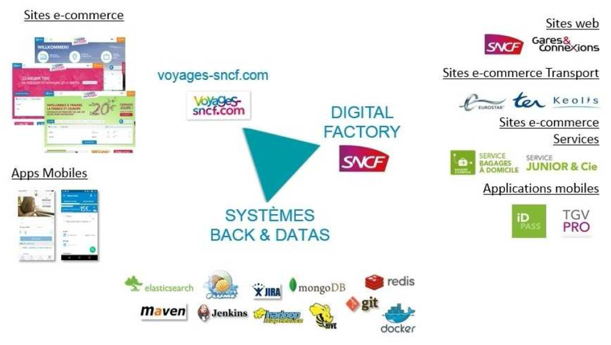
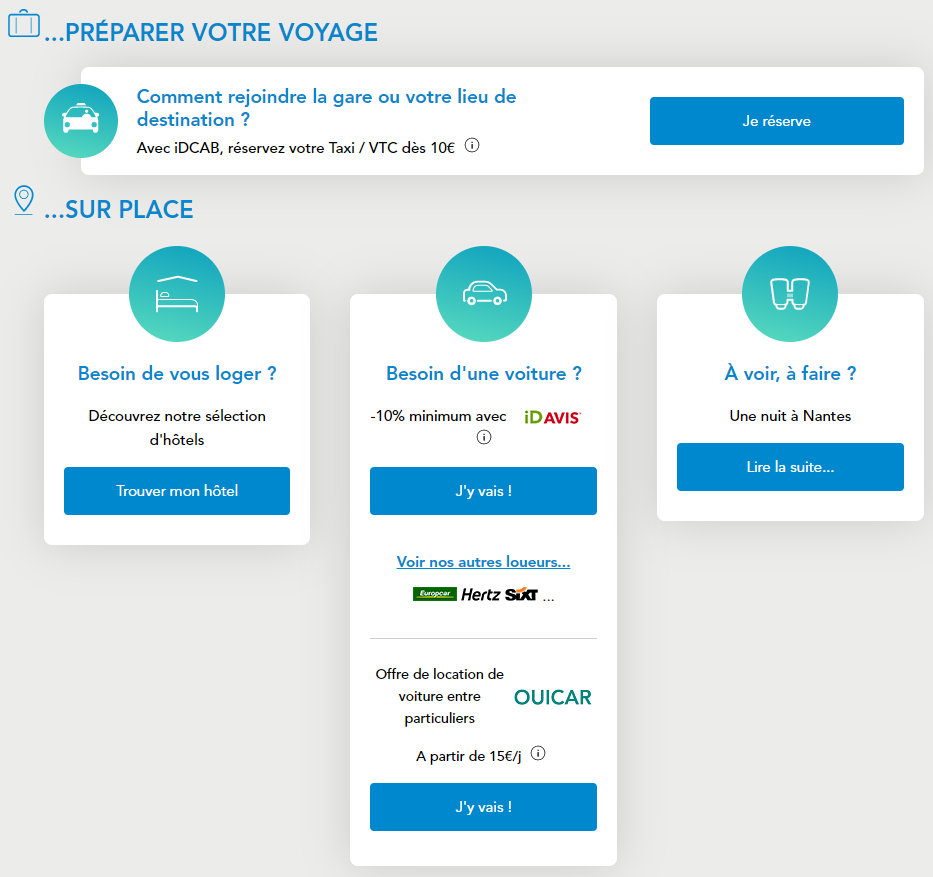
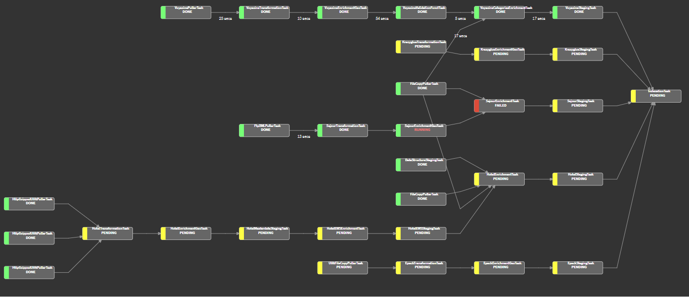
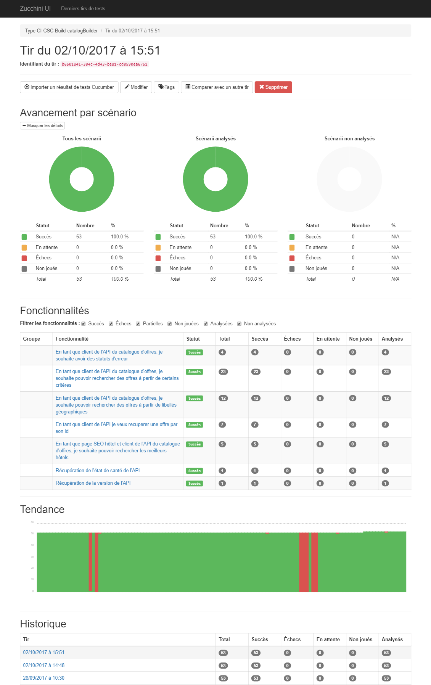
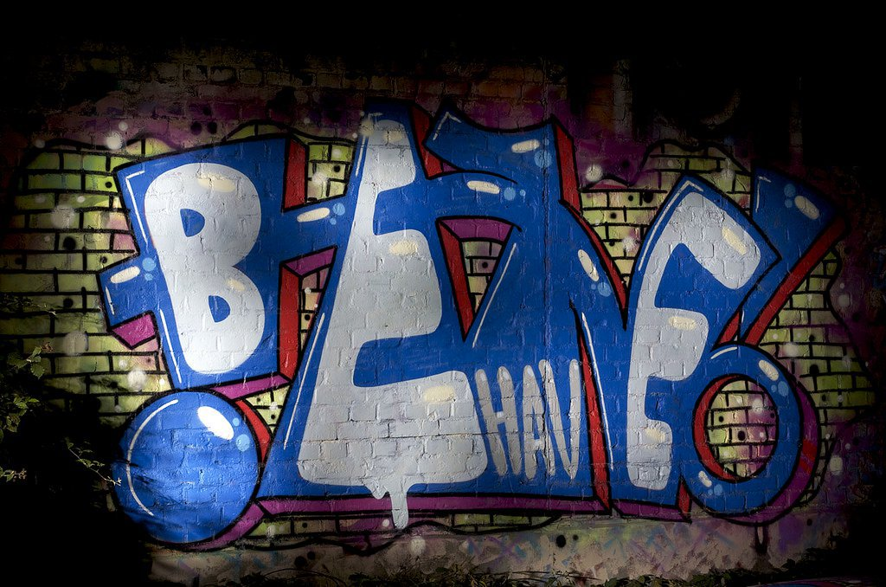

<!-- .element: data-state="first-slide" --> ## Pipelines luigi & tests behave <figure> <figcaption>Modification d'un <a href="https://www.threadless.com/product/543/this_is_not_a_pipe">motif de T-shirt</a> par <a href="https://www.facebook.com/littlegdesign">Little g Design</a></figcaption> </figure> <small>3/10/2017</small> Note: qui utilise "pipeline" au féminin ? ## Bonsoir ! <div style="display: flex; align-items: center"> <div style="display: flex; flex-direction: column; text-align: left"> <p>**Lucas Cimon**</p> <p>https://chezsoi.org + [](https://chezsoi.org/shaarli)</p> </div> </div> Note: à VSCT depuis mars 2015 ## Voyages-Sncf Technologies  Note: - voyages-sncf.com: 1200 collaborateurs (dont 51% de femmes), 34 ans de moyen d'âge - VSCT = branche de Voyages-Sncf.com: * +de 700 personnes, internes & prestas compris * 3 sites: Paris, Lille, Nantes ## Au menu [<img src="luigi-logo.png" alt="Logo luigi" style="box-shadow: none">](http://luigi.readthedocs.io/en/stable/index.html) + [](http://pythonhosted.org/behave/) ##  Note: capture d'écran de notre widget Xsell -> construction du référentiel d'offres ? ## ETL  <img src="elasticsearch-logo.png" alt="Logo ElasticSearch" class="fragment" style="max-width: 10rem"> Note: batch d'agrégation & validation, avec comme destination un index ElasticSearch ### 😞 <!-- .slide: data-background="black" --> <img src="pipelines-screensaver.jpg" alt="L'économiseur d'écran Windows avec des tuyaux" style="max-height: 40rem"> ## luigi <figure> <figcaption><a href="https://dribbble.com/shots/3460043-Luigi">Illustration</a> de <a href="https://dribbble.com/Dmitrij">Dmitrij</a> de Fireart Studio</figcaption> </figure> Note: - initiallement conçu par Erik Bernhardsson pour de la recommendation de chansons - open-sourcé par lui et Elias Freider à Spotify en 2013 - utilisé par des centaines d'entreprises dont: Foursquare, Stripe, Groupon, Red Hat... ## luigi  Note: - direct acyclic graph - idéal pour du batch - fournit: découpage en tâches imposées, gestion des dépendances, visualisation, et surtout: `resume` tasks on error - + supporte multi-process-workers - limites: pas de scheduler "builtin" -> `cron` ## Task breakdown <img src="task_breakdown.png" alt="Code source d'une Task luigi expliqué" style="max-height: 35rem"> ## Défis rencontrés <ul> <li class="fragment">séparer <span style="color:#2aa198">données</span> & <span style="color:#6c71c4">métadonnées</span></li> <li class="fragment">exécution sélective:<ul> <li>une seule tâche</li> <li>une seule branche</li> </ul></li> <li class="fragment">tâches "tampons" de cache (_staging_)</li> <li class="fragment">historisation & purge des anciennes données</li> </ul> Note: métadonnées = status, timestamp, nombre d'offres en sortie, erreurs & warnings... + offres rejetées ## luigi-utils Implémente tout ça, plus: - supervision des tâches - centralisation des logs - upload dans Elasticsearch - lecture / écriture de JSON en flux avec `ijson` Note: - supervision = durée d'exécution, ressources consommées... - centralisation des logs: capture d'exceptions + envoie dans Graphite / Flume - upload dans Elasticsearch : en batch + avec bascule d'alias ##  Note: pointer les tâches de _staging_ Transition: comment tester le code métier ? + nécessité d'uniformisation ## En prod <img src="sonatype-nexus-logo.png" alt="Logo Nexus Sonatype" style="max-width: 15rem; box-shadow: none"> + <p class="fragment">+  <span style="font-size: 1.5rem">pour exposer nos <span style="color:#6c71c4">métadonnées</span> JSON</span></p> Note: - le Nexus nous sert de cache à Pypi - Anaconda est employé car prisé de nos _data-scientists_ - pq Tornado ? -> utilisé par luigi ## behave <figure> <figcaption>Photo issue du blog <a href="http://catholiccuisine.blogspot.fr/2012/03/ssss-snack-for-st-patricks-day.html"> Catholic Cuisine</a></figcaption> </figure> = tests <em>Cucumber</em> pour **Python** Note: test runner (not compatible with `pytest`) D'après la doc, utilisable avec Django ## behave : gherkin ```gherkin Feature: showing off behave @fixture-integ Scénario: Import des offres KrazyGlue Soit les informations de mapping suivantes : | RRCode | regionId | cityName | | FRPAR | 2734 | Paris | | FRNTE | 2603 | Nantes | Quand le catalogue exécute la tâche KrazyGlueTransformationTask Alors on récupère 4 offres KrazyGlue ``` Note: supporte aussi les _scenario outlines_ ## behave : glue ```python @given('les informations de mapping suivantes') def set_destinations(ctx): destis = {row[0]: {'regionId': row[1], 'cityName': row[2]} for row in ctx.table} ctx.rid_mapping = create_fixture(destis) @when('le catalogue exécute la tâche KrazyGlueTransformationTask') def process_transformation(ctx): ctx.task_name = 'KrazyglueTransformationTask' run_luigi(ctx.task_name, '--rid-mapping', ctx.rid_mapping) @then('on récupère {counter:Int} offres KrazyGlue') def assert_number_of_offers(ctx, counter): with open(get_task_data(ctx.task_name), 'r') as data: assert len(json.load(data)) == counter ``` ## Runner luigi ```python def run_luigi(etl_module, task_module, *luigi_args): args = ['--local-scheduler', '--no-lock'] args += ['--module', etl_module, task_module] args.extend(luigi_args) Register.clear_instance_cache() # very important with supervision(disable=True): # in-house luigi.interface._run(args) ``` ## Bonus: validation de types ```python from behave import use_step_matcher, register_type use_step_matcher('cfparse') register_type(String=lambda text: text) register_type(Int=lambda text: int(text)) register_type(List=lambda text: [w.strip() for w in text.split(',')]) ``` ## [](zucchini-report.png) Note: cf. our Github + merci à Pierre Gentile ## hooks ```python def before_scenario_hook(context, scenario): # Using a test config in luigi luigi_cfg = luigi.configuration.get_config() luigi_cfg._config_paths = 'path/to/test-luigi.cfg' luigi_cfg.reload() context.global_luigi_cfg = luigi_cfg switch_els_to_fixture_alias(context, scenario) prepare_fixture(context, scenario) ``` Note: - exemple issue directement de notre code - `after_all_hook` restaure l'alias Elasticsearch - fixtures basées sur tags -> pratique au début, puis pas simple (trop d'indirections, + gherkin indépendant des données de test) ## CLI ```bash behave --outfile report.json \ --format=json.pretty \ --no-capture --no-capture-stderr \ --tags=-@fixture-integ ```  Note: cucumber-compatible output: * https://github.com/behave/behave/issues/267 * notre solution: https://gist.github.com/Lucas-C/2ba14f253186e8df079219a3038e7d94 ## Bonus point: coverage ```bash cd geo && coverage erase && py.test && cd .. cd catalog && coverage erase && py.test && cd .. cd geo-bdd && coverage erase && coverage run -m behave && cd .. cd catalog-bdd && coverage erase && coverage run -m behave && cd .. coverage report --show-missing coverage html ``` Note: Combine 2 ELT tests + unit tests coverage Options utiles: `coverage run --rcfile=.coveragerc --source=dir1,dir2` ## Merci ! Rejoignez-nous: [jobs.](https://jobs.voyages-sncf.com/) Et suivez notre actu sur [](https://open.voyages-sncf.com/) Note: comparaison avec Airflow: http://bytepawn.com/luigi-airflow-pinball.html